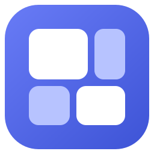
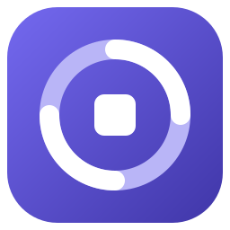
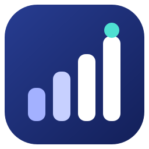

SPACETALLY / ICON EXPLORATION
三个 Icon 方向
三款均为可缩放 SVG。下面同时展示应用图标尺寸、任务栏尺寸和浅色／深色背景效果。

A · TREEMAP
空间分块
直接呼应磁盘空间地图。四块不同面积形成清晰、安静的识别形状，也延续现有界面的蓝紫色。
64 / 32 / 16

B · SCAN
扫描聚焦
环形路径表达扫描动作，中心方块代表被定位的占用目标。造型更有动态感，偏工具属性。
64 / 32 / 16

C · TALLY
统计刻度
递增柱形呼应 Tally 与占用排行。深蓝基底和青色标记让它在任务栏中更醒目。
64 / 32 / 16
A · 稳重，最贴近产品B · 强调扫描过程C · 强调统计结果
这是方案评审稿，尚未替换应用图标。选定方向后可继续调整形状、配色并导出 Windows 所需的 ICO 与 PNG 尺寸。